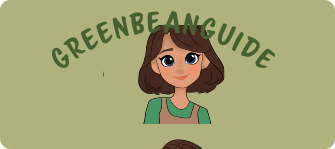

Waarom GreenBeanGuide
GreenBeanGuide bestaat om vegan koffieplekken in Amsterdam makkelijk vindbaar te maken voor iedereen die bewust kiest voor plantaardig en duurzaam. De website biedt een handige gids voor koffieliefhebbers die op zoek zijn naar cafés die vegan opties aanbieden, van plantaardige melk tot heerlijke vegan lekkernijen. GreenBeanGuide maakt het eenvoudiger om te genieten van een goede kop koffie, terwijl je tegelijkertijd bijdraagt aan een duurzamere en diervriendelijke wereld.